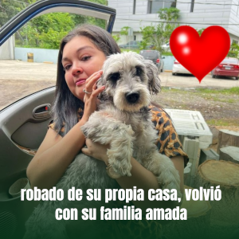

Biscuit, robado de su propia casa, volvió con su familia amada
El pasado 29 de octubre, Biscuit fue robado de su propia casa en Puerto Cortés. Tras una búsqueda incansable, su familia descubrió que una mujer de una pulpería lo había tenido, pero lo negó y afirmó haberlo entregado a un vendedor de productos. Aunque la mujer se mostró evasiva y dio información confusa para despistar, la familia persistió y logró obtener detalles clave.
Leer más
